IIM Bangalore • Finance • Strategy • Case Competitions
Sambhav Khandelwal
BBA student in Digital Business & Entrepreneurship at IIM Bangalore, CFA Level I Candidate, aspiring investment banker, and case competition builder with a strong interest in financial markets, structured problem solving, and high-conviction strategy work.

Finance
Markets • Analysis • Research
Focused Track
About
Profile built for finance, strategy, and high-pressure problem solving.
Sambhav combines academic rigor with applied case work, internships, and credential-backed learning. The website is designed as both a polished digital resume and a curated proof-of-work portfolio.
Education
Indian Institute of Management Bangalore
BBA — Digital Business & Entrepreneurship
September 2025 – Present
Core Interests
- Financial markets & investment banking
- Business strategy & growth models
- Corporate finance & market research
- High-density case competition storytelling
Selected Highlights
- National finalist at IIM Bangalore, IIM Indore, and Masters’ Union case competitions
- Completed J.P. Morgan Investment Banking Job Simulation
- Completed Bloomberg Finance Fundamentals
- SEBI Investor Awareness Test completed
Skill Stack
Finance
Investment Banking
Business Analytics
Strategy
Microsoft Excel
PowerPoint
Public Speaking
Leadership
Marketing
Teamwork
Portfolio Management
Social Media Marketing
Experience
Hands-on exposure across fundraising, outreach, and financial market research.
Fundraising Intern
Feb 2026 – Present • RemoteBasti Ki Pathshala Foundation
Reached out to potential donors, explained the NGO’s mission, and supported fundraising campaign communication. Built confidence in outreach, persuasion, and donor engagement.
Campus Ambassador
Feb 2026 – Mar 2026 • RemoteTATVA Fest, IIT Bombay
Selected for the Campus Ambassador program to amplify event reach, run on-campus promotion, and support awareness and participation among students.
Finance Research Analyst Intern
Feb 2026 – Mar 2026 • RemoteIncline Rise
Worked with traders and analysts to understand financial markets, tracked equity, commodity, currency, and interest rate derivatives, and supported basic market analysis.
Case Competition Work
Selected decks and prototypes that showcase strategy thinking, visual storytelling, and product framing.
This section blends live prototypes with the original deck PDFs so visitors can move from polished interface to source presentation instantly.
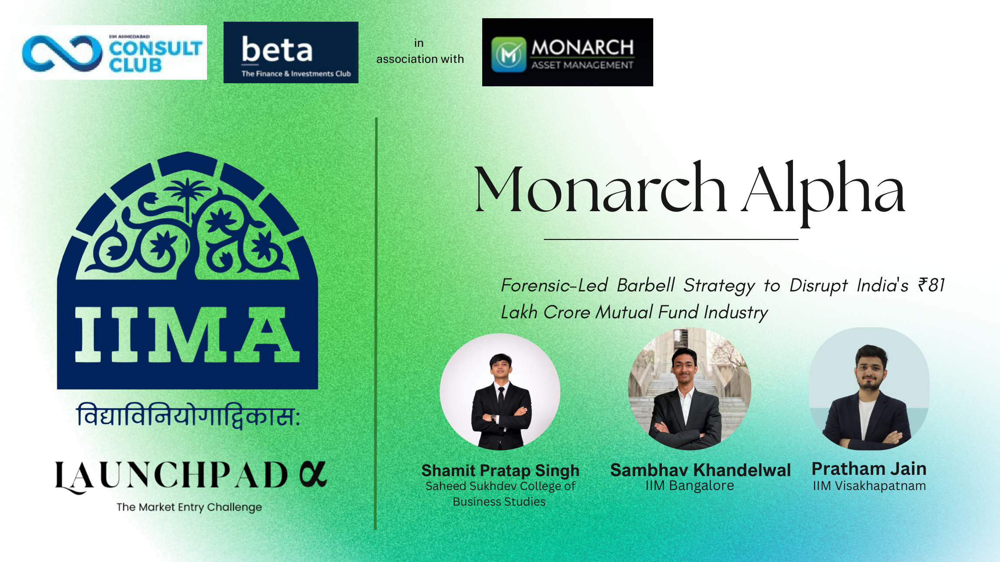
Launchpad α • IIM Ahmedabad
Monarch Alpha
A forensic-led barbell strategy for disrupting India’s mutual fund industry through a research-led, asset-light AMC model focused on investor conviction, trust, and retention-led economics.
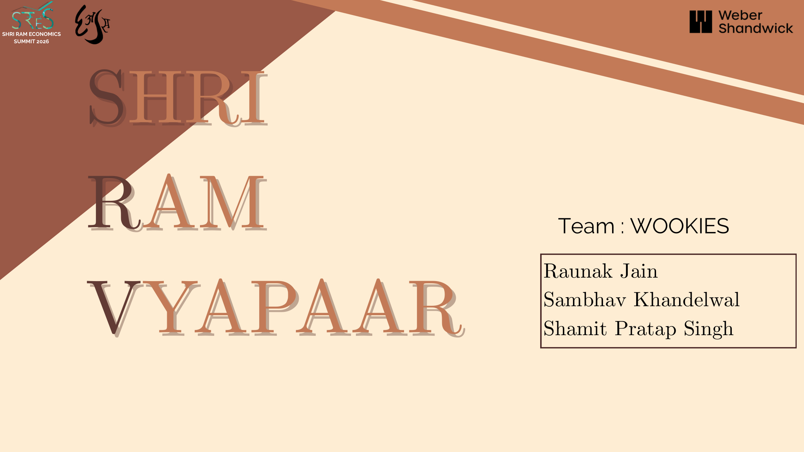
SRCC Economics Summit 2026
Vyapaar Wookies
A growth workflow strategy for WhatsApp Business that prioritizes the right MSME segments, reduces setup friction, and turns familiar chat behavior into repeatable commerce conversion.
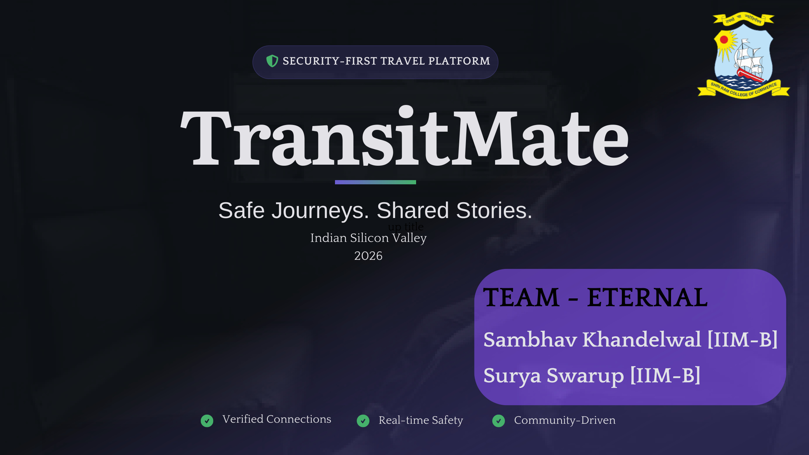
SRCC Business Conclave 2026
TransitMate
A security-first travel platform designed around verified passenger connections, real-time safety, and a relay protocol that improves route matching for solo travellers across India.
Project email: transitmate.contact@gmail.com
Credentials & Documents
Proof-backed profile with accessible certificates, offer letters, and resume material.
Every card below opens the original PDF, making the site useful as both a personal portfolio and a recruiter-friendly document hub.
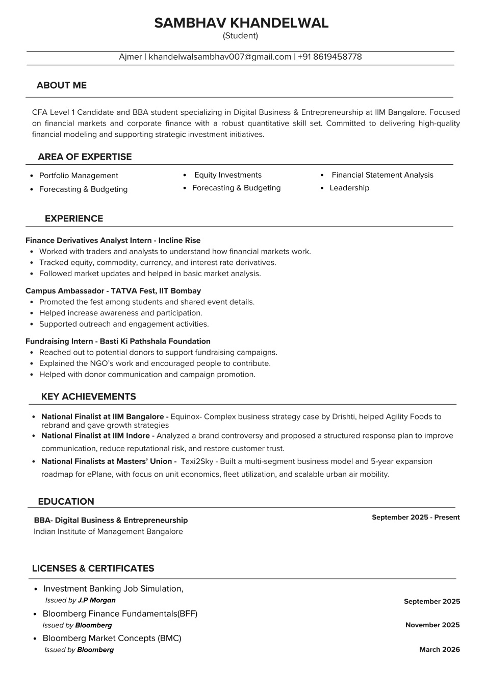
Resume
One-page professional resume covering education, achievements, experience, credentials, and profile summary.
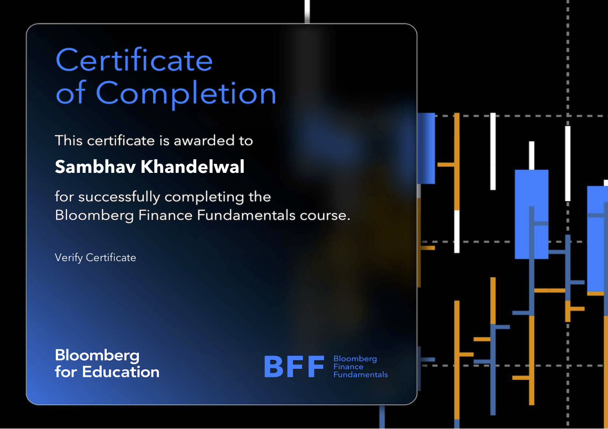
Bloomberg Finance Fundamentals
Certificate validating foundational finance learning through Bloomberg for Education.
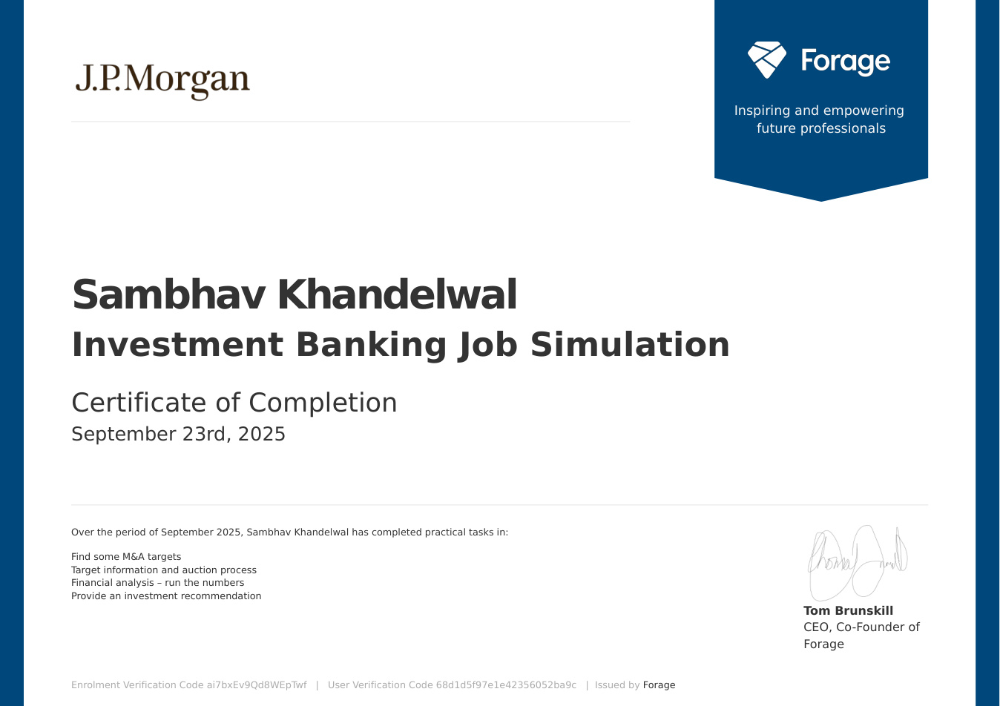
J.P. Morgan Investment Banking Job Simulation
Forage-issued certificate focused on M&A target screening, financial analysis, and investment recommendation work.
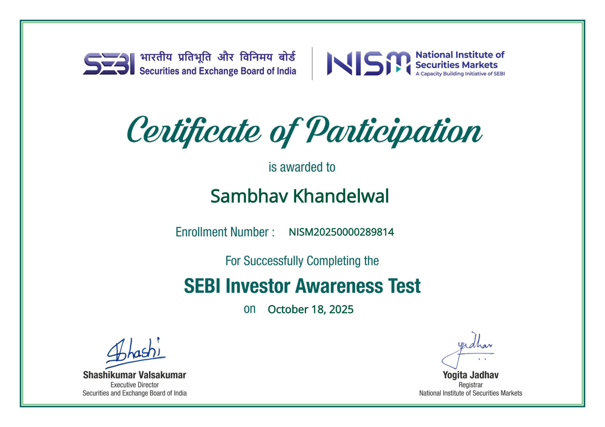
SEBI Investor Awareness Test
Participation certificate highlighting engagement with investor education and capital market awareness.
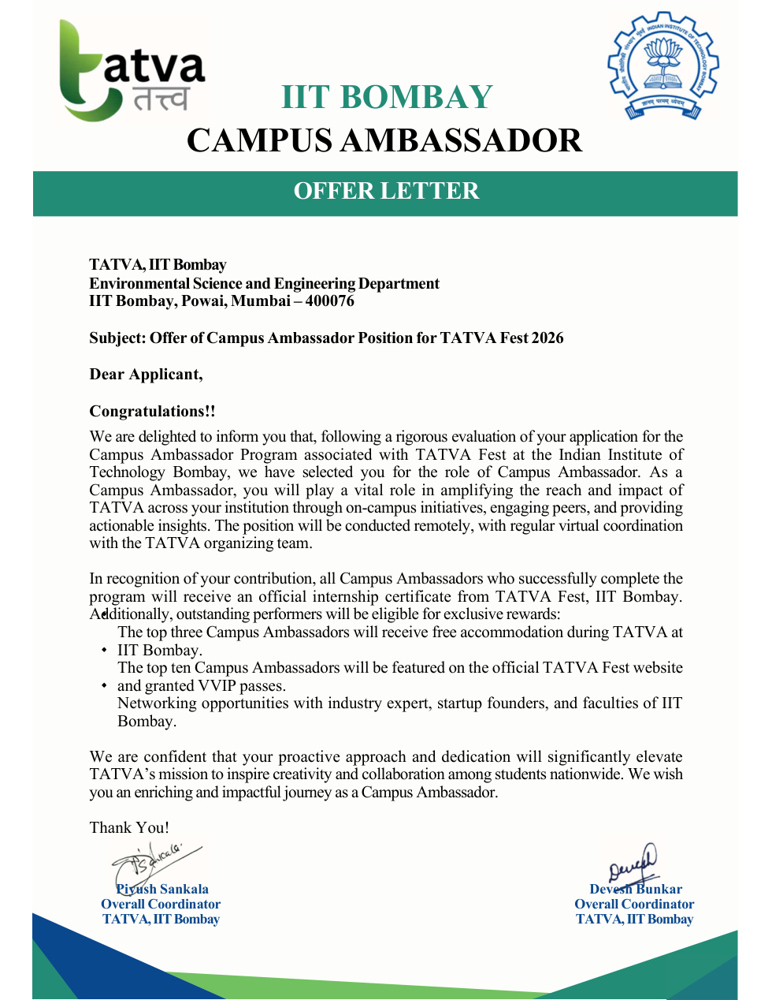
IIT Bombay Campus Ambassador Offer Letter
Official offer letter for the TATVA Fest 2026 Campus Ambassador role at IIT Bombay.
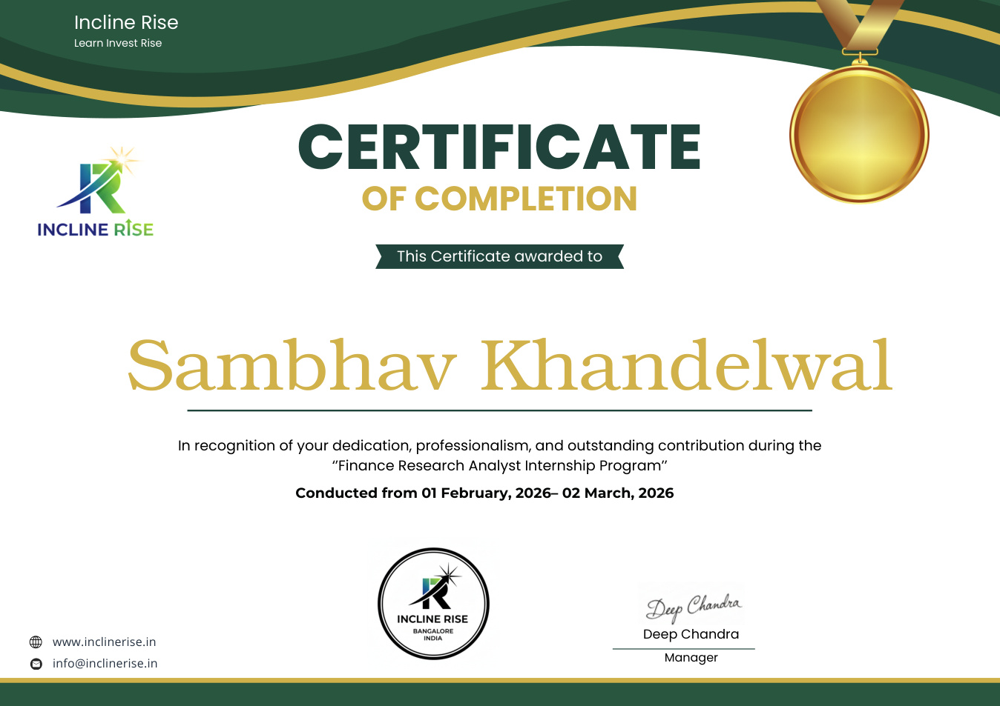
Incline Rise — Finance Research Analyst Internship
Certificate recognizing contribution during the finance research analyst internship program.
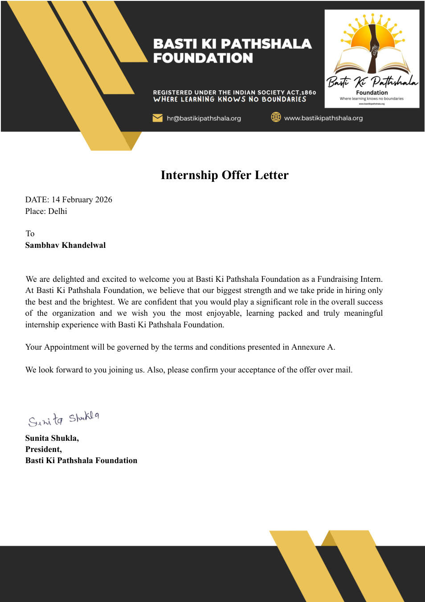
Basti Ki Pathshala Offer Letter
Internship offer letter for the fundraising role, including remote work structure and responsibilities.
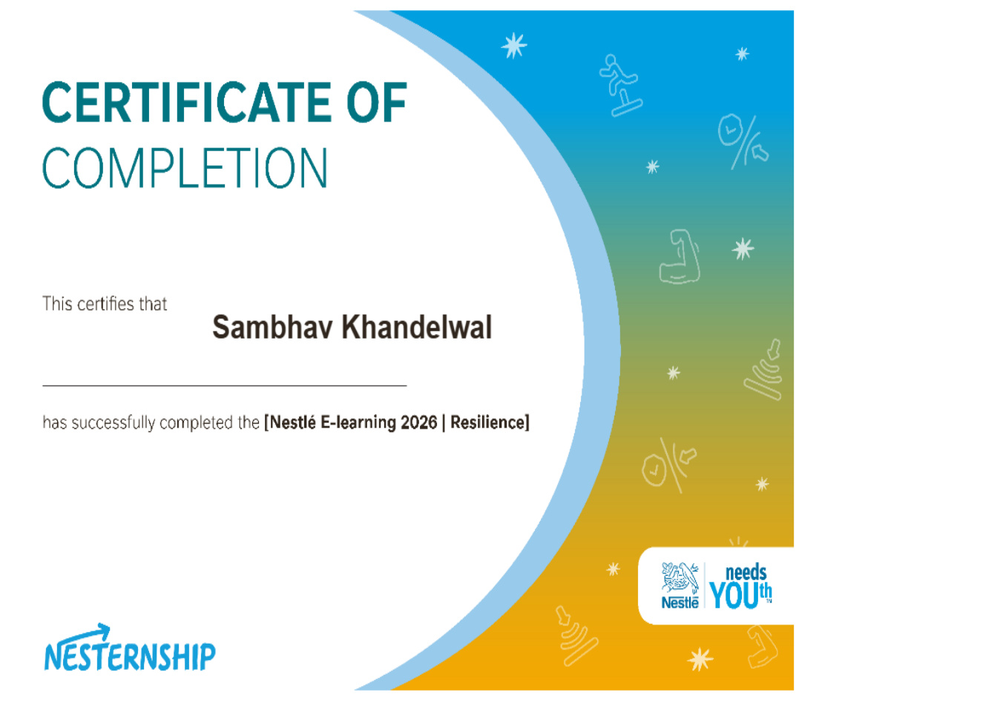
Nestlé E-learning 2026 — Resilience
Learning certificate demonstrating additional self-driven professional development.
Contact
Open for finance, strategy, and project conversations.
This website is structured to help recruiters, collaborators, and case competition evaluators quickly move between profile summary, featured work, and source documents.